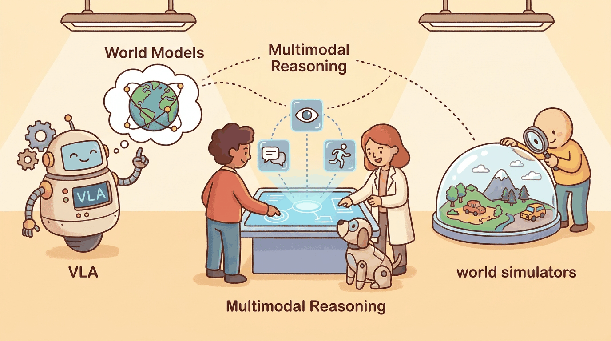

A Kurzgesagt-meets-XKCD visual metaphor: a friendly robot holding a clipboard reads instructions in plain English while a translucent "imagined future" hovers above it, showing the consequences of an action before it happens. Below, three pixelated worlds (a kitchen, a warehouse, a Mars surface) are being assembled in real time by a 3D Gaussian-splat painter."The next decade of AI is the decade we stop pretending the world ends at the screen."
Author's notebook, after watching the first pi-0.5 generalist policy demo, October 2025
This chapter is where multimodal generation meets the physical world. Chapter 31 covered the foundational generative stack of images, video, and audio. Chapter 41 lifts that stack into 3D, into action, and into reasoning. Vision-Language-Action models give robots a brain that reads natural language instructions and outputs motor commands. World models let agents imagine the consequences of actions before taking them, training policies inside synthesized rollouts rather than expensive real-world trials. 3D and scene generators populate simulators with synthetic environments at a cost orders of magnitude below hand-modeled assets. The multimodal reasoning thread that closes the chapter is the substrate that makes the rest controllable: shared embedding spaces let language ground in pixels, geometry, and physics, which is what lets agents plan, retrieve, and act with consistency across modalities.
The 2024-2026 acceleration here is striking. OpenVLA shipped as the first open-weights generalist VLA. Physical Intelligence's pi-0.5 reached cross-embodiment transfer on five robot platforms. Genie 3 from DeepMind generates interactive worlds from a single text prompt. 3D Gaussian Splatting went from research curiosity in 2023 to the dominant neural scene representation by 2025, displacing NeRFs in most production pipelines. Covariant RFM-1 deployed in warehouses showed that VLA models scale to messy real-world manipulation. The conceptual seams between perception, generation, and action have collapsed.
Even if you have no intention of programming a robot, this chapter changes how you think about any agent. The same techniques (chain-of-thought over visual scenes, world-model rollouts before action, cross-modal retrieval as grounding) are now standard for software agents that book travel, debug code, or operate spreadsheets. Treating "embodied" as a separate subfield is a 2022 framing; in 2026 the techniques flow back into every agentic system, including ones that never leave the screen. Chapter 26's agent loop and Chapter 27's tool-use patterns are direct beneficiaries of the world-model work below.
The fastest path from zero to running a VLA model or a Gaussian splat in 2026:
pip install openvla # Stanford / Toyota open-weights VLA (7B)
pip install lerobot # HuggingFace robotics SDK + datasets
pip install gsplat # 3D Gaussian Splatting (PyTorch)
pip install nerfstudio # NeRF + Gaussian splat training pipeline
pip install genesis-world # Genesis simulator for embodied AI research
pip install isaac-lab # NVIDIA Isaac Lab for sim-to-real RLYou will mostly call these through their CLIs (e.g., ns-train splatfacto, openvla --task="put the red block on the plate") rather than their Python APIs directly, except inside training loops.
Every section of this chapter solves the same problem in a different modality: How do you give a transformer enough world structure that its predictions become useful actions? VLA models do it by tokenizing motor commands. World models do it by predicting next frames as the loss. Gaussian splats do it by parameterizing geometry as differentiable Gaussians the transformer can edit. Cross-modal retrieval does it by aligning embedding spaces. Once you see this thesis, the seven sections stop looking like seven separate research areas and start looking like one engineering pattern applied to seven substrates.
Next-action prediction (Section 41.1 VLAs), next-frame prediction (Section 41.4 world models), next-pixel denoising in 3D (Section 41.5 Trellis and friends), and next-token prediction in language (Section 7.2) all minimize the same maximum-likelihood objective. The substrate of "the next thing" changes; the gradient does not. Gato (DeepMind, 2022, arXiv:2205.06175) was the foundational demonstration that one transformer learns text, image, and action with the same loss; everything in this chapter is a refinement of that result.
Chapter Overview
The chapter moves from action to imagination to perception. Sections 32.1 through 32.3 cover the action layer: Vision-Language-Action models, LLM-powered robotics, and 3D Gaussian Splatting as the scene representation that ties perception to manipulation. Section 41.4 introduces world models, the predictive engines that let agents reason about futures rather than only react to presents. Sections 32.5 and 32.6 turn to multimodal generation and editing in 3D and across modalities: how a single prompt produces a 3D asset, a playable environment, or a localized edit to an existing image. Section 41.7 closes the generative arc with reasoning and retrieval, the cross-modal embedding stack that connects this chapter back to the conversational systems in Parts III through V. Section 41.8 brings the entire thread back to embodied science: robots and AI systems that conduct experiments and discover, not merely answer.
The first VLA model that beat hand-coded baselines on a real warehouse task (Covariant RFM-1, 2024) was trained on more video hours of human pick-and-place than there are seconds in a century. The data hunger of embodied AI is what makes synthetic worlds (section 32.4) not optional but mandatory: there is not enough real-world demonstration data on Earth to train one of these models the slow way.
Sections in This Chapter
| Sub-area | Frontier model / library | Where to use it | Section |
|---|---|---|---|
| VLA generalist policy | pi-0.5, OpenVLA-7B, RT-2-X | Robot manipulation, cross-embodiment transfer | 32.1 |
| LLM robot planner | SayCan, Code as Policies, Voxposer | Long-horizon planning, multi-robot coordination | 32.2 |
| Neural scene representation | 3D Gaussian Splatting (gsplat), Nerfstudio | Real-to-sim, photo-realistic novel views | 32.3 |
| World model | Genie 3, V-JEPA 2, GAIA-2 | Sim-to-real training, agent planning rollouts | 32.4 |
| 3D asset generator | TripoSR, Meshy, Trellis | Synthetic environment population | 32.5 |
| Multimodal editor | Imagen 3 edit, Flux Edit, GPT-4o image edit | Localized image / video edits | 32.6 |
| Cross-modal retrieval | SigLIP 2, BGE-M3, ImageBind | Multimodal RAG, agent grounding | 32.7 |
| Scientific autonomy | FunSearch, A-Lab, ChemCrow | Closed-loop discovery in robotics + chemistry | 32.8 |
If you build software agents and want the conceptual transfer: read 32.1, 32.4, and 32.7 (action / imagination / perception). If you actually deploy robots: read 32.1 - 32.3 in order, then 32.4 for sim. If you build creative tools: 32.5 and 32.6 are the production-relevant pair. If you build research systems or scientific automation: jump to 32.8.
What Comes Next
With the embodied stack mapped, Chapter 43 consolidates the working toolchain: platforms, libraries, datasets, and the model lineup you actually reach for. Part VIII then asks the question every demo eventually faces: how do you evaluate and operate a multimodal system in production?